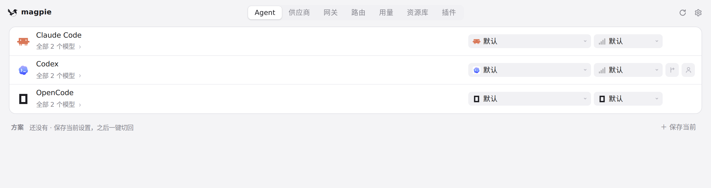
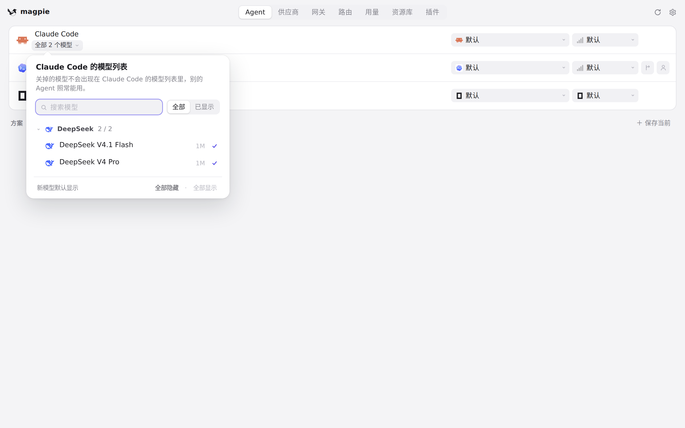
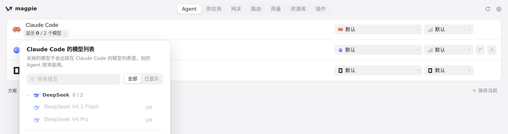
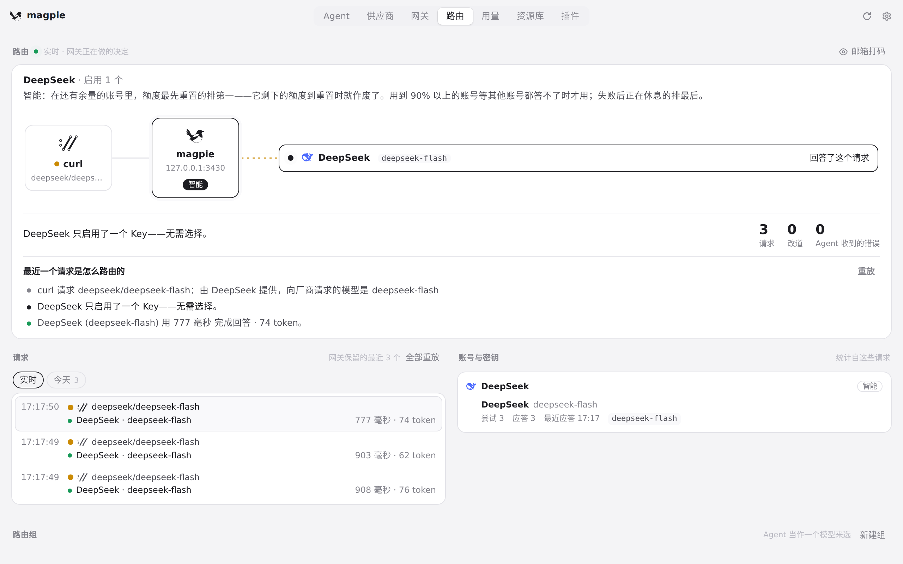

#325 界面预览
commit 488840a · 回到 PR · 这个 diff 让 omp 的 task/smol/slow 三个角色在 Agent 页各有一个独立的方块（未设置时跟随主模型，可单独选模型），角色的思考等级会保留、重置时把用户原来的模型放回去。另外，Agent 名字下的模型列表行在模型被全部隐藏后仍保留为「显示 0 / N 个模型」，路由页多了一种「请求格式不被接受」的失败说法（请求形状厂商读不懂就转给下一家、不休息），网关在把 Codex 的 additional_tools 请求发给不认识它的厂商前会先改写。
红线是鼠标走过的轨迹，红色圆环是一次点击；底部文字是这一步在做什么。空格暂停，← → 逐段查看。

Agent 的模型列表全部隐藏之后 · Agent 页：Claude Code 名字下方的模型列表行

Agent 的模型列表全部隐藏之后 · 打开的模型列表，底部是「全部隐藏」

Agent 的模型列表全部隐藏之后 · 「全部隐藏」之后，Agent 名字下方那一行
路由页上一次请求的步骤 · 路由页列出的最近几次请求

路由页上一次请求的步骤 · 这次请求是怎么路由的：步骤与耗用